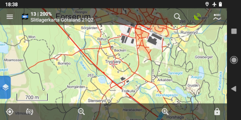

Karta avsedd för ruttplanering och offline-navigering av motorcyklister. Baserad på Lantmäteriets terrängkarta.
Geografisk täckning omfattar hela Sverige utom inre Norrland.
Rekommenderad app för Android är Locus Map.

Karta med rekommederade vägar för tyngre transporter. Innehåller fartkameror, parkeringsfickor, rastplatser och höjdbegränsningar.
Geografisk täckning omfattar hela Sverige.
Kartorna är skapade av öppna data från Lantmäteriet och Trafikverket med datalicensen Creative Commons CC0.